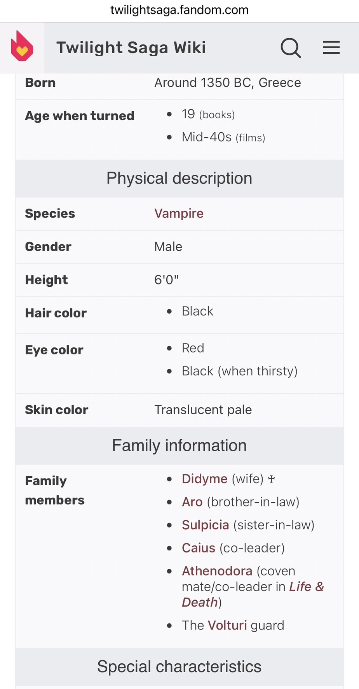
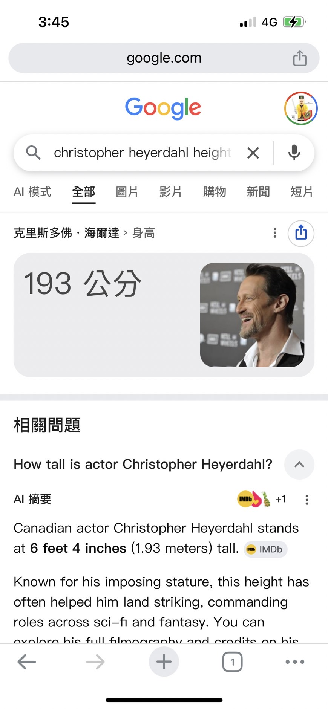

目錄
隨便點選下方其中一個主題便能直接跳到該主題的說明區一、被壓縮的歷史時間感
對現代人而言，「古代」通常是一個模糊而混合的概念。西元前十三世紀的摩西、
西元一世紀的耶穌、西元十二世紀的十字軍，甚至西元前五世紀的斯巴達，
在大眾文化裡常被歸類為同一種「遙遠過去」。
然而從歷史角度來看，這些時代彼此之間往往相隔數百年甚至上千年。
摩西與耶穌之間的時間距離，大致相當於今天的人回望中國宋朝；
而初代《Assassin’s Creed》的背景設定是十二世紀，
與耶穌時代相差超過一千年。
之所以會產生「年代差不多」的錯覺，是因為人類的大腦並不擅長理解漫長時間尺度。
只要脫離了現代生活經驗，人們便容易將所有古代文明壓縮成同一個模糊的歷史空間。
「古代」對現代人而言，往往不是精確年代，而是一種氛圍。
二、影視與遊戲如何創造「古代感」
電影與遊戲真正重視的，通常不是歷史年代的精準性，
而是觀眾能否快速辨識時代氣氛。
因此，創作者會建立一套高度符號化的「古代視覺語言」。
長袍、石造建築、火把、冷兵器、沙漠、羊皮卷，
這些元素會被不斷重複使用。
久而久之，觀眾的大腦便會將它們統一歸類為「古代文明」。
於是，《出埃及記》中的埃及與《耶穌受難記》中的猶太地區，
雖然相隔千年以上，
卻在視覺上給人十分接近的感覺。
同樣的情況也出現在遊戲之中。
《Assassin’s Creed》與《I Am Jesus Christ》
雖然背景年代相差超過千年，
但玩家仍會感覺它們屬於同一種「古代中東世界」。
三、歷史人物的神話化與英雄化
除了年代被壓縮之外，
歷史人物本身也經常被重新塑造。
真實歷史中的人物，往往與大眾熟悉的形象相差極大。
例如關羽手持青龍偃月刀的形象，
其實並不符合三國時代的真實武器史。
青龍偃月刀這類大型關刀，
是在三國時代結束八世紀後才誕生。
然而由於戲曲、小說與民間信仰的長期塑造，
「關羽＝青龍偃月刀」已成為深植人心的文化符號。
德川家康與豐臣秀吉也是類似案例。
歷史上的德川家康身材不高，
豐臣秀吉甚至可能只有一百四十公分左右。
但在電子遊戲裡，
他們卻往往被塑造成高大威猛、充滿霸氣的英雄人物。
原因非常簡單：
現代觀眾會把高大、英俊與力量感，
自動聯想到領袖與成功者。
娛樂作品追求的並非「歷史真實」，
而是「象徵性真實」。
四、現代審美如何覆蓋古代現實：《暮光之城》的吸血鬼形象
流行文化對歷史人物與古代角色的重新塑造，
在吸血鬼題材中尤其明顯。
《暮光之城》中的馬庫斯，
設定誕生於公元前十三世紀左右的地中海世界，
然而角色形象卻完全符合現代社會對「高貴男性」的審美標準。
劇組甚至找來身高超過一百九十公分的演員飾演該角色，
這與真實古代人的平均身高形成巨大落差。
根據考古與人類學研究，
公元前十三世紀的地中海男性平均身高，
大約只有一百六十五公分左右。
然而對現代觀眾而言，
高大身材往往象徵：
力量、威嚴、神祕感與超自然性。
因此，影視作品中的吸血鬼，
通常不會被塑造成營養不良、
身材矮小的古代人，
而會被設計成近似現代時尚模特兒的形象。
這說明了大眾文化真正重視的，
並不是歷史考證，
而是角色是否符合觀眾對「超凡存在」的想像。




現代流行文化中的古代角色，
往往不是歷史人物，
而是現代審美投射到古代世界的結果。
五、耶穌形象的文化再造
宗教藝術中的耶穌，
通常被描繪成留著長髮、五官深邃的美男子。
然而歷史上的耶穌，
大概率只是普通的一世紀猶太男性。
事實上，《聖經》中甚至記載，
猶大必須特地指認耶穌，
羅馬當局才能在人群中找到他。
這意味著耶穌的外貌並不特別突出。
然而在中世紀與文藝復興之後，
歐洲藝術家逐漸將耶穌塑造成帶有神性光輝的理想形象。
這種改造並不是歷史考證，
而是宗教象徵。
人們希望神看起來神聖、莊嚴、超越凡俗，
因此耶穌的形象逐漸變成了文化想像中的「救世主樣貌」。
六、真正的古代可能遠比想像中殘酷
如果真的有人能夠穿越到古代再返回現代，
他們最震撼的，
恐怕並不是金字塔或古羅馬競技場，
而是當時極端惡劣的生活條件。
現代影視與遊戲中的古代世界，
往往經過高度美化。
真實歷史中的城市，
可能充滿糞便、病菌與腐敗氣味；
飲水容易受到污染；
夜晚幾乎沒有照明；
小傷口就可能導致死亡。
現代人早已習慣：
自來水、抗生素、電燈、空調、下水道與冰箱。
這些科技讓現代文明顯得理所當然，
卻也讓人低估了古代世界的殘酷程度。
因此，許多歷史作品其實是在創造一種
「能讓現代觀眾接受的過去」，
而不是完全真實的歷史。
七、人類真正記住的是文化符號
歷史記憶並不是純粹客觀的。
大多數人記住的，
往往不是歷史真相，
而是經過文化加工後的符號。
關羽與青龍偃月刀、
長髮的耶穌、
巨大化的戰國武將、
高大英俊的古代吸血鬼，
這些都不是歷史本身，
而是文化長期塑造出的集體想像。
人類並不只是記錄歷史，
更是在不斷重新發明歷史。
歷史的真正樣貌，
往往比電影與遊戲更加陌生。